TSD8 - Le télésiège de la Rosta
Les Gets et le secteur des Chavannes
Située en Haute-Savoie au cœur du domaine des Portes du Soleil, la station des Gets conserve l'identité d'un village de montagne tout en proposant un domaine skiable moderne adapté à tous les niveaux. Reliée aux autres stations françaises et suisses des Portes du Soleil, elle bénéficie d'un vaste terrain de ski évoluant entre le Léman et le Mont-Blanc.
Les Gets est une station-village située à 1172 mètres d'altitude dans le Chablais français. Elle fait partie intégrante du domaine skiable des Portes du Soleil, qui regroupe 12 stations reliées entre la France et la Suisse. Le domaine des Gets-Morzine s'étend sur deux versants : celui des Chavannes et celui du Mont Chéry.
Le secteur des Chavannes propose des pistes adaptées à tous les niveaux et permet notamment de rejoindre la station de Morzine. Le secteur de la Rosta, situé sur ce versant, constitue une zone importante du domaine grâce à la diversité de ses pistes et à ses nombreuses liaisons.
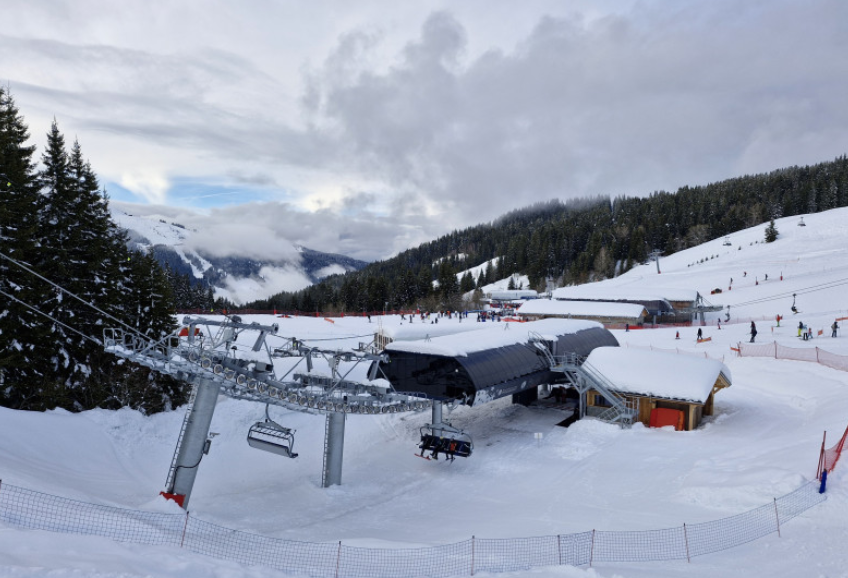
Situation
Le télésiège de la Rosta est situé sur le massif des Chavannes, dans le secteur Rosta-Perrières. Il prend place à proximité immédiate du télésiège des Grains d'Or et permet d'accéder à plusieurs pistes du secteur. Sa position lui permet également de participer aux liaisons entre les différentes zones du domaine skiable des Gets.
Le nouveau télésiège remplace l'ancien télésiège fixe quatre places construit par Skirail en 1992. Cette modernisation permet d'augmenter considérablement la capacité de transport du secteur et d'améliorer les conditions de circulation des skieurs.
Localisation géographique
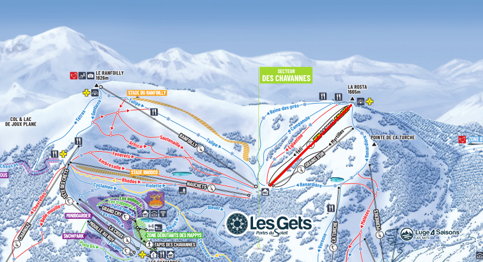
Historique
Le secteur de la Rosta est fréquenté depuis de nombreuses années et possède une grande diversité de pistes, allant des pistes bleues accessibles aux débutants jusqu'à des pistes noires plus techniques.
La première génération du télésiège de la Rosta est construite en 1972. Il s'agit alors d'un télésiège fixe deux places construit par Poma. Après vingt années d'exploitation, cette remontée est remplacée en 1992 par un nouveau télésiège fixe quatre places construit par Skirail.
Avec l'augmentation progressive de la fréquentation du secteur, la capacité du télésiège devient insuffisante. En 2025, les Gets décident donc de remplacer l'ancien appareil par un nouveau télésiège débrayable huit places de grande capacité. La construction du nouveau télésiège s'est déroulée sur une période d'environ six mois, entre juillet et décembre 2025. Le nouvel appareil est ouvert au public le 20 décembre 2025.
Construction
Les travaux du nouveau télésiège de la Rosta ont débuté durant l'été 2025 avec le démontage de l'ancien télésiège fixe quatre places. La construction du nouvel appareil s'est ensuite poursuivie pendant plusieurs mois afin de permettre son ouverture pour la saison hivernale 2025-2026.
Le chantier a notamment nécessité la réalisation des différents massifs destinés à accueillir les pylônes ainsi que le montage des deux gares. La nouvelle installation a été construite par Poma et appartient techniquement à la gamme Multix.
Les nouvelles gares sont équipées de couvertures LIFE, apportant une architecture moderne tout en améliorant la protection des équipements. Une partie du garage des sièges est intégrée directement à la gare aval tandis qu'un bâtiment annexe permet de stocker une partie supplémentaire des véhicules.

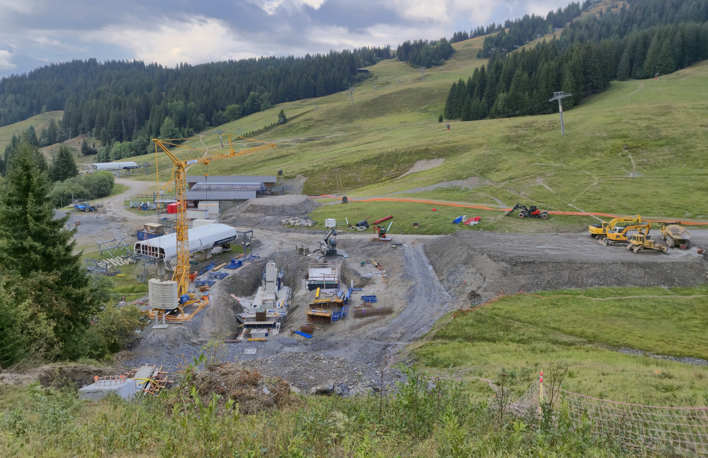

Caractéristiques
Le télésiège de la Rosta est un télésiège débrayable huit places construit par Poma et exploité par SoleGets. Il a été mis en service en 2025 et ouvert au public le 20 décembre de la même année. La remontée dispose d'une capacité de huit personnes par siège et d'un débit de 3640 personnes par heure, extensible jusqu'à 4200 personnes par heure. Sa vitesse maximale d'exploitation atteint 6 m/s.
La gare aval se situe à 1397 mètres d'altitude tandis que la gare amont atteint 1668 mètres. La ligne possède une longueur inclinée de 847 mètres et une pente maximale de 76,5 %. La motorisation Direct Drive est située en gare amont et la mise en tension est réalisée en gare aval. La ligne comporte 10 pylônes et le télésiège dispose initialement de 41 sièges, avec une possibilité d'extension jusqu'à 50 véhicules lorsque le garage définitif sera construit.
La gare aval
La gare aval du télésiège de la Rosta est située directement à côté du télésiège des Grains d'Or. Cette proximité est toutefois temporaire puisque le Grains d'Or doit être démonté en 2026.
Le nouveau télésiège de la Rosta a été dimensionné pour reprendre une partie des flux auparavant répartis entre les deux appareils. Le remplacement permet ainsi de regrouper la capacité de transport de l'ancien télésiège de la Rosta et du Grains d'Or.
Un nouveau garage doit être construit à l'emplacement de l'ancienne gare aval du Grains d'Or. Il permettra d'augmenter le nombre de sièges disponibles, faisant passer la capacité de stockage de 41 à 50 véhicules.
La gare aval est équipée d'un contour permettant la décélération et l'embarquement des skieurs. Une partie des sièges peut être stockée directement dans les voies de la gare, tandis que les autres véhicules sont rangés dans le bâtiment de garage.
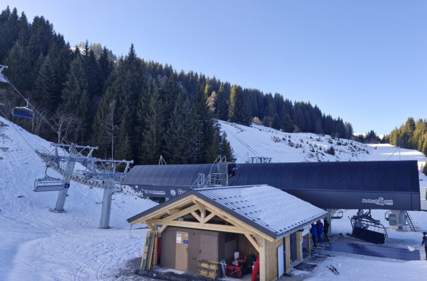
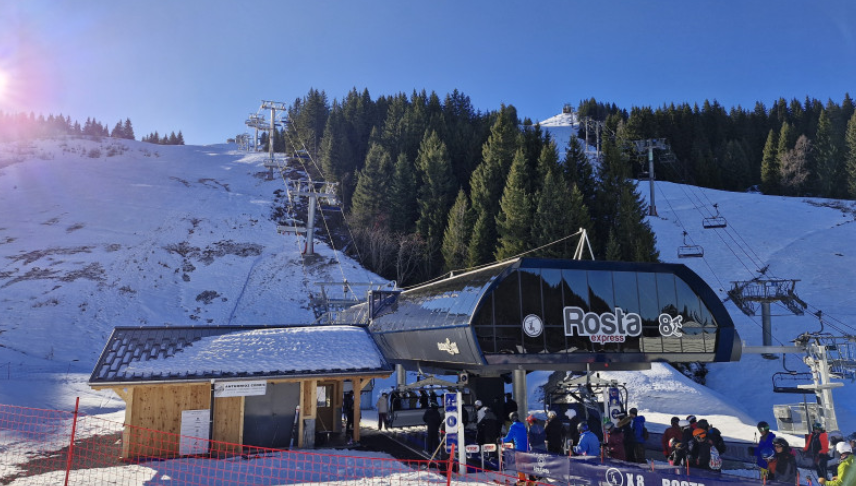
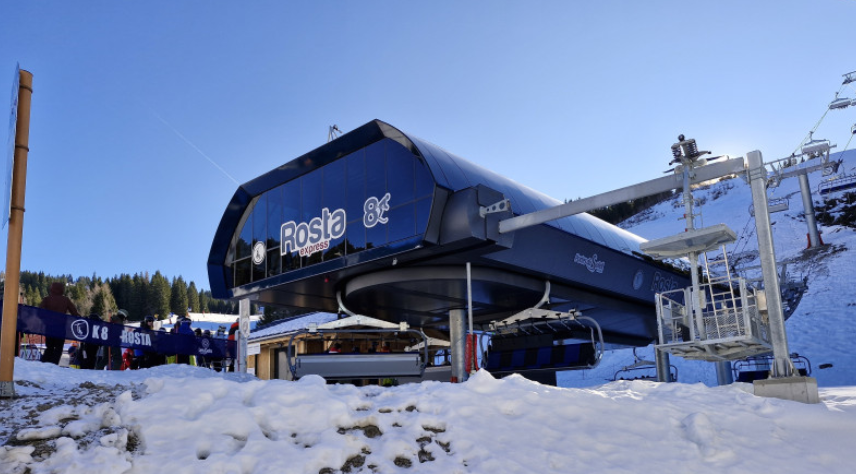
Ligne
Le nouveau télésiège fonctionne à une vitesse maximale de 6 m/s, ce qui est particulièrement rapide pour une installation de cette longueur. Le trajet complet dure un peu plus de deux minutes, contre environ dix minutes avec l'ancien appareil. La ligne est composée de 10 pylônes et présente une pente maximale de 76,5 %. Elle permet de rejoindre rapidement la partie supérieure du secteur Rosta et offre une liaison efficace vers les différentes pistes du domaine. Plusieurs portées successives permettent à la ligne de franchir le relief du secteur. Le pylône 7 constitue notamment le seul pylône mixte de la ligne.
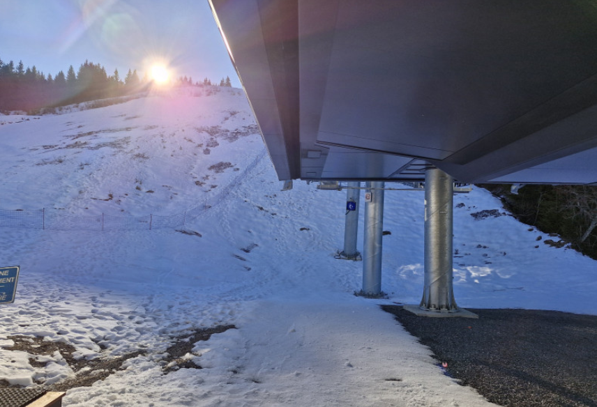
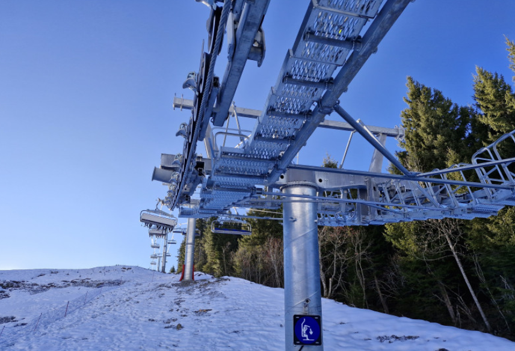
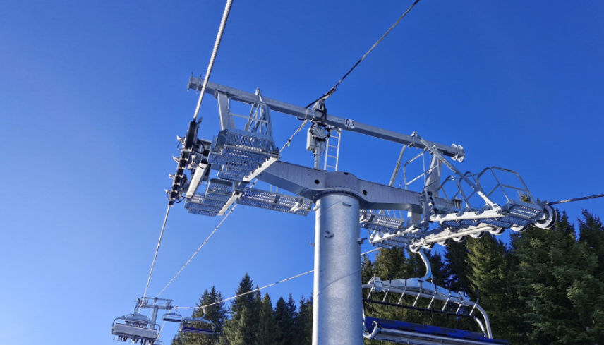
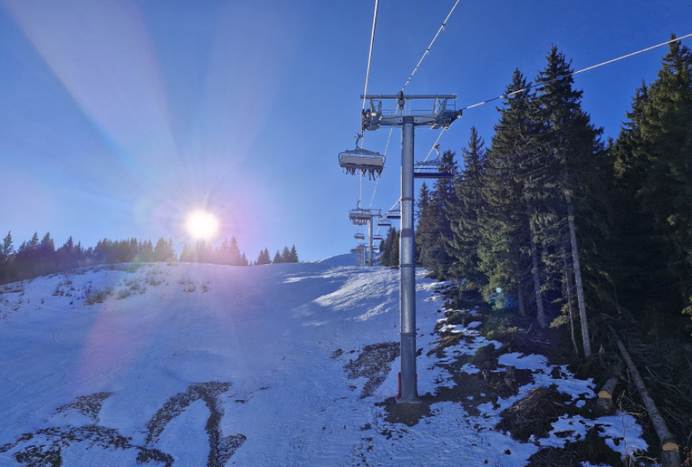
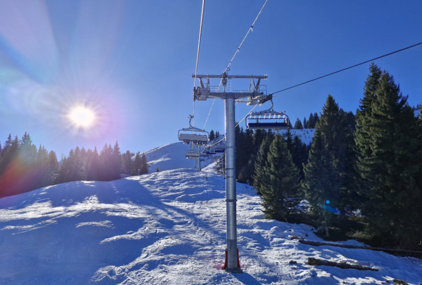
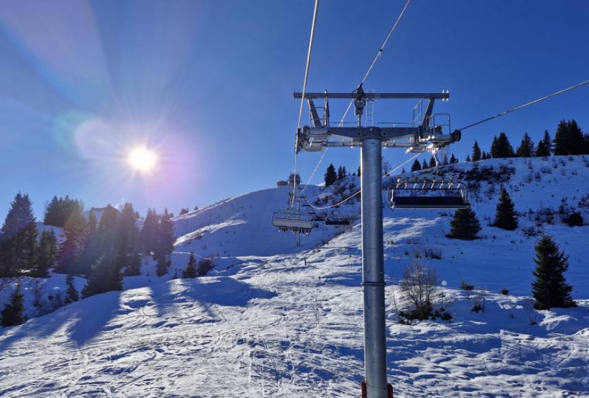
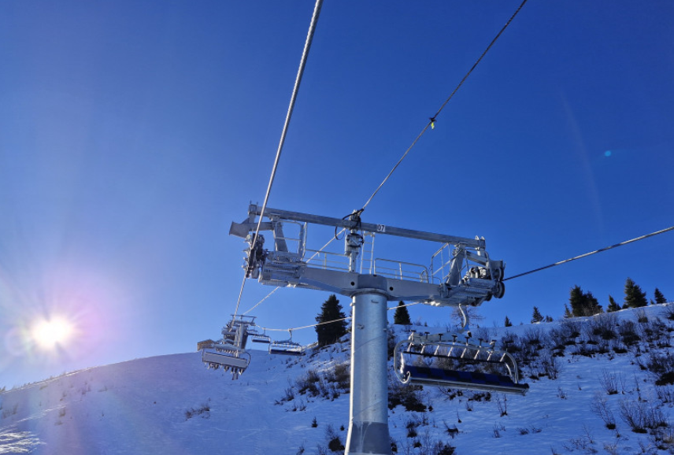
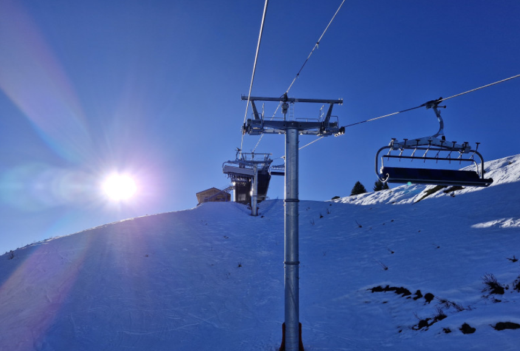
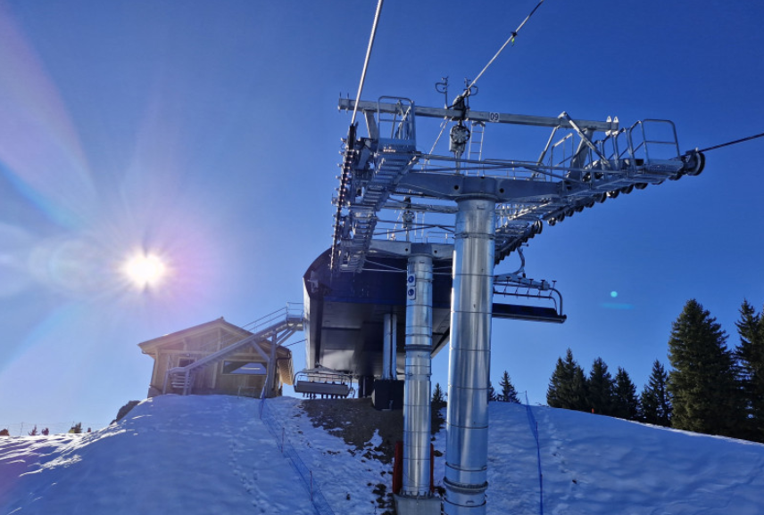
Gare amont
La gare amont est située à 1668 mètres d'altitude. Elle accueille la motorisation Direct Drive qui permet d'entraîner directement le câble du télésiège. La gare possède une couverture LIFE caractéristique de la nouvelle génération d'installations Poma. Elle comprend également la cabine de l'opérateur et les différents équipements nécessaires à l'exploitation et à la maintenance du télésiège.
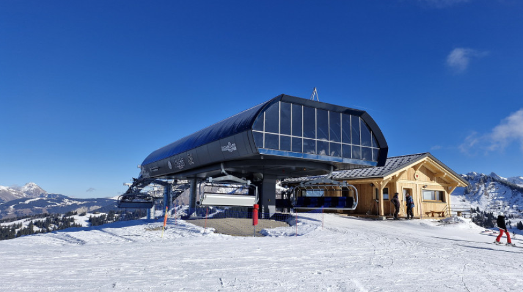
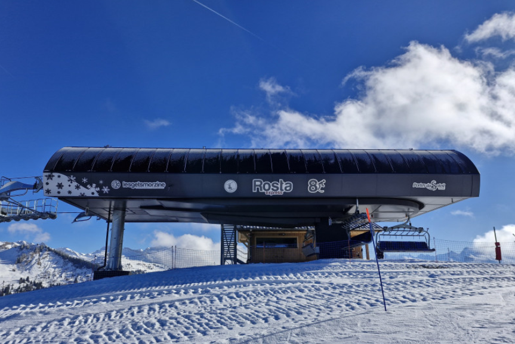
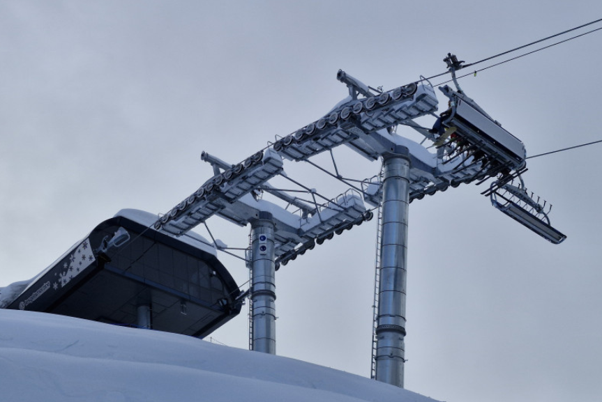
Véhicules
Le télésiège de la Rosta est initialement équipé de 41 sièges LPA-OCC pouvant accueillir huit personnes. Chaque siège possède un design bicolore bleu et noir et est équipé d'une barre de sécurité adaptée au transport de huit skieurs. Les véhicules sont équipés de pinces débrayables LPA. Leur espacement est adapté à l'exploitation de l'installation afin de permettre d'atteindre le débit prévu par le constructeur. Une fois le nouveau garage construit, des sièges supplémentaires pourront être ajoutés afin de porter le nombre total de véhicules à 50.
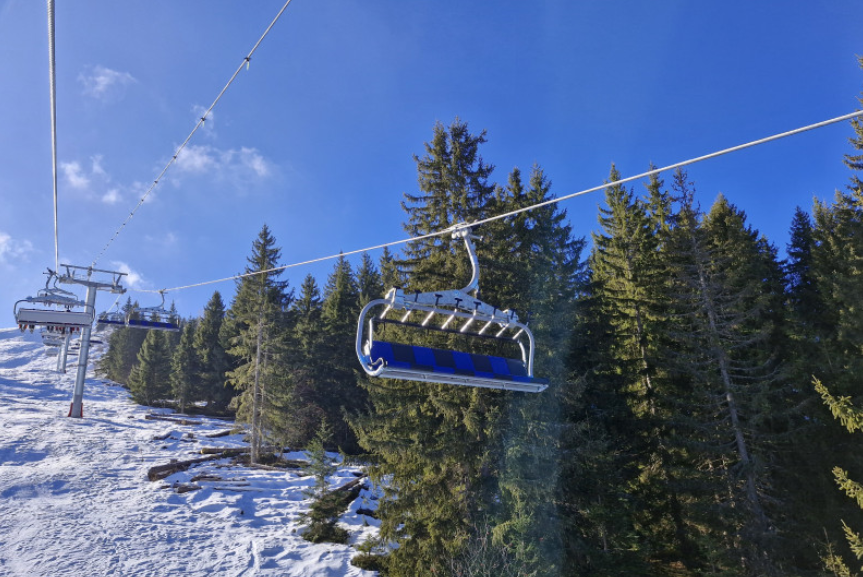
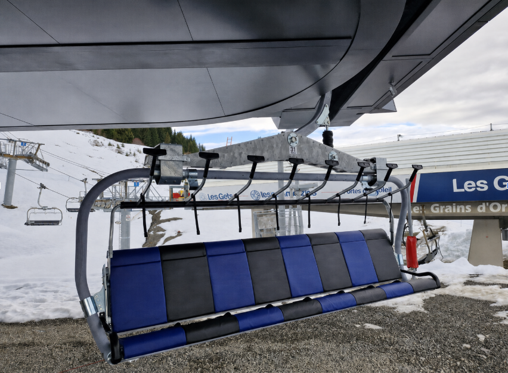
Photos depuis les pistes
Plusieurs vues permettent d'observer le télésiège depuis les pistes du secteur. La piste Yéti longe notamment une partie de la remontée et offre différents points de vue sur la ligne et ses pylônes.
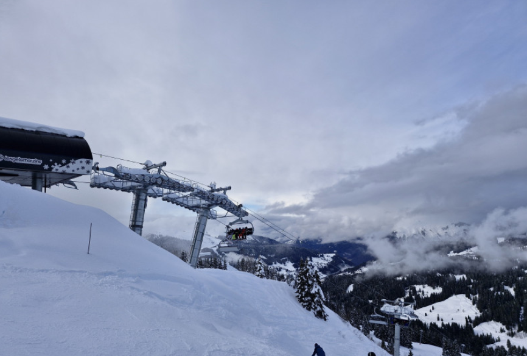
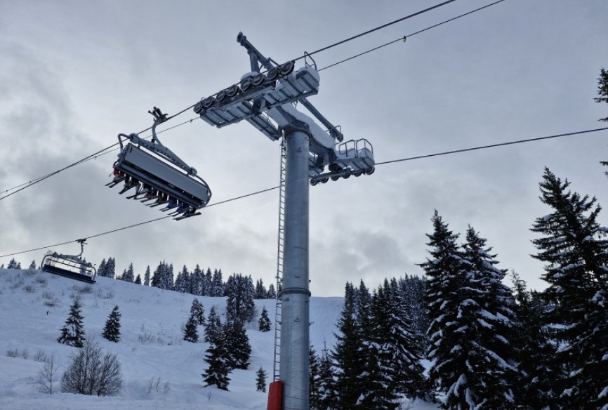
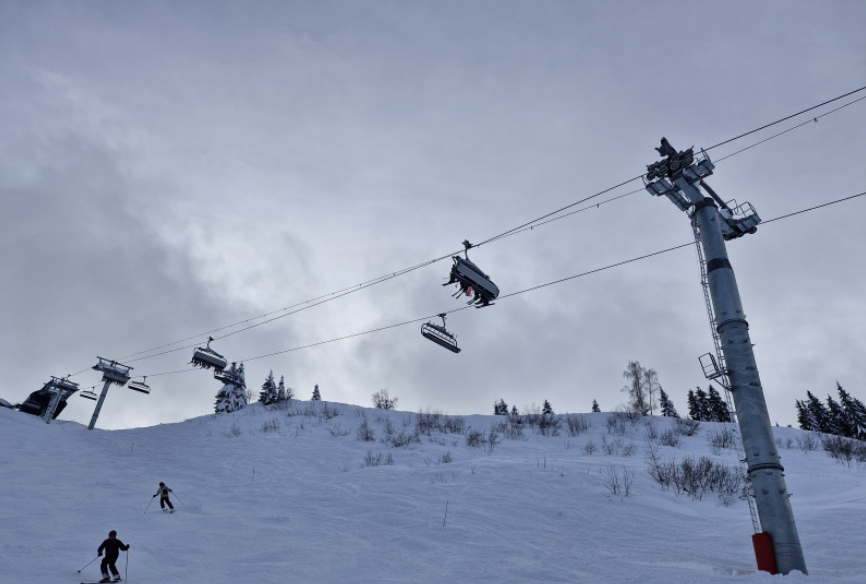
Conclusion
Le nouveau télésiège de la Rosta constitue une amélioration importante par rapport à l'ancien appareil. Grâce à sa capacité de huit places, son débit élevé et sa vitesse maximale de 6 m/s, il permet de réduire considérablement le temps de montée et d'améliorer la circulation des skieurs dans le secteur.
Cette nouvelle remontée constitue également une pièce importante dans la modernisation du secteur Rosta-Perrières. Elle permet d'anticiper la disparition du Grains d'Or et de proposer une installation moderne, rapide et adaptée à la fréquentation actuelle du domaine skiable des Gets.